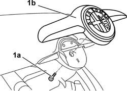

7055A84 FRONT ORNAMENT - R R
- Path
- Procedures > 70 FITTINGS > 7055 MOULDINGS ON PROTECTIONS > 7055A EXTERIOR MOULDINGS > 7055A84 FRONT ORNAMENT - R R
- Kind
- repair procedure (removal / refitting; the operation number is the code)
- Applies to
- all engines; all production periods
- Interactive page
- https://sloeber94.github.io/elrnDB-aGt/en/#/125001968
Applies to: all engines; all production periods
 Removing
Removing
 Refitting
RefittingOpen the bonnet lid.
1. Undo the bolt (1a) and remove the badge (1b) releasing it from the centering pins and from the double-sided tape.

Applies to: all engines; all production periods
Refitting
RemovingCheck that the badge is undamaged.
Clean the residues of the old double-sided tape using heptane.
Position the badge attaching the centering pins and sticking the double-sided tape.
Tighten the bolt.
Close the bonnet lid.